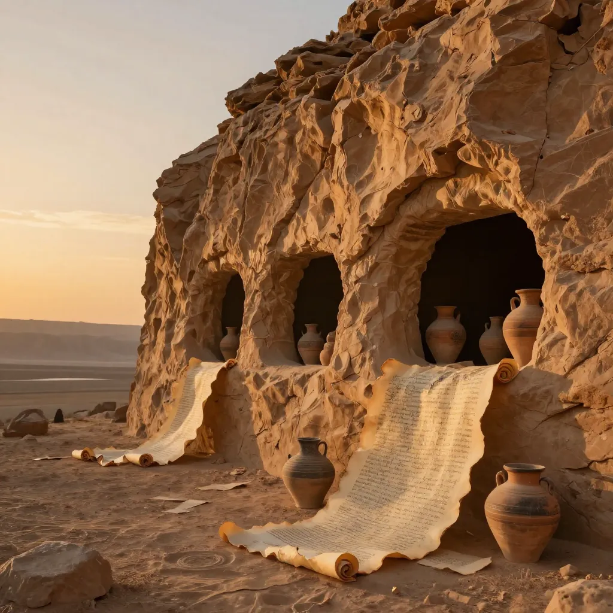

Dead Sea Scrolls: The 2,000-Year-Old Texts That Changed What We Know About the Bible

A stone, a goat, and a breaking pot
A young shepherd named Muhammed edh-Dhib was looking after his goats. It was 1946 or 1947, and nobody is sure of the exact date. He was a Bedouin, one of the desert people of the region. He stood among rough limestone cliffs above the northwestern shore of the Dead Sea.
The best-known version of the story goes like this. One of his goats had wandered off. Edh-Dhib threw a stone into a small cave opening in the cliff to make the animal come out. He did not hear a goat. He heard a clay pot break.
He climbed into the cave. Today it is called Cave 1. Inside he found large clay jars. Some of the jars held old leather scrolls, and some scrolls were wrapped in linen cloth.
Many scholars call it one of the greatest discoveries of the 20th century. But why was a library hiding in a cave?
A library in the cliffs
Nearby lay the ruins of an old settlement called Khirbet Qumran. Over the next ten years, archaeologists and Bedouin searchers explored 11 caves in the cliffs above it. Archaeologists are people who study the past by digging up old things. Together they recovered more than 900 texts.
Cave 4 was the richest. It was found in 1952. It held about 15,000 fragments, or small pieces, from roughly 500 manuscripts. A manuscript is a text written by hand. Imagine a giant jigsaw puzzle of ancient writing, with thousands of tiny pieces. Putting it together and publishing it took decades.
The scrolls were found in the Judean Desert, a hot land of rock, sand, and salt, with almost no rain. The ground drops from the hills of Judea down to the Dead Sea. That shore is about 1,400 feet (430 meters) below sea level.
This hard place was a gift. Most scrolls were written on parchment, which is made from animal skin. Without water in the air, the skin did not rot. So the dry air helped the scrolls last for more than 2,000 years.
Most were written between the 3rd century BCE and the 1st century CE. So what did the writers say?
Words a thousand years older
Most of the scrolls are in Hebrew. Others are in Aramaic and in Greek. Some are on papyrus, a kind of paper made from reeds. The texts include copies of every book of the Hebrew Bible except Esther.
This was big news. Before the scrolls, the oldest Hebrew Bible manuscripts that scholars had were from about 900 CE. One famous example is the Aleppo Codex, from about 920 CE. The star of the new collection is the Great Isaiah Scroll. Scholars date it to about 125 BCE. It is the oldest known complete copy of the Book of Isaiah, and it is about 1,000 years older than the Aleppo Codex.
Scholars compared it with the Masoretic Text. That is the standard Hebrew Bible text, which was fixed centuries later. The two are very close. They are not perfect twins, though. Scholars count more than 2,600 small differences, such as a word spelled in another way. But over more than 1,000 years the text stayed mostly the same. The scribes, the people who copied the Bible by hand, had worked with great care.
The scrolls hold more than Bible books. There are copies of the Book of Enoch, the Book of Jubilees, and Tobit. Many people read these in that age, although they were left out of the official Hebrew Bible. There is also a Community Rule, which explains how one group was organized. And there is a War Scroll, which tells of a battle at the end of the world between the “Sons of Light” and the “Sons of Darkness.”
How did all this reach the modern world?
From a dealer’s shop to the world
Edh-Dhib and his friends took the scrolls from Cave 1 to a dealer in Bethlehem. The dealer offered them to different buyers.
Four of the first scrolls were bought by Metropolitan Athanasius Yeshue Samuel. He was a leader of the Syrian Orthodox Church in Jerusalem. The other three went to Professor Eleazar Sukenik of the Hebrew University of Jerusalem.
In 1948, the Arab-Israeli War spread across Palestine. The next year, Metropolitan Samuel secretly took his four scrolls out of the country to the United States. Professor William F. Albright of Johns Hopkins University studied the writing on the Isaiah scroll. He was a leading Bible archaeologist of his time, and he dated the scroll to about 100 BCE.
The news excited scholars everywhere. In 1949, archaeologists found where Cave 1 was and dug there with proper care for the first time. They recovered more pieces of scrolls. They also confirmed that the cave was the place the scrolls had come from.
Today Israel keeps almost all of the scrolls and fragments at the Israel Museum in Jerusalem. The official books that publish them ran from 1955 to 2009. That was more than 60 years after the first discovery.
But a bigger question was still waiting. Who had hidden these texts?
Were they the Essenes?
The leading answer is called the Qumran-Essene hypothesis. A hypothesis is an idea that has not been proved. Many scholars have held it since the 1950s. It says the scrolls were the library of the Essenes, a strict Jewish group. People lived at Qumran from the 2nd century BCE until 68 CE.
There are good reasons for it. Three ancient writers described the Essenes: Philo of Alexandria, Flavius Josephus, and Pliny the Elder. They wrote that the Essenes lived together and shared what they had. Pliny placed them near the Dead Sea, and that fits Qumran.
The archaeologist Roland de Vaux said the ruins fit too. He saw stepped pools for ritual washing, called mikva’ot. He also found a large cemetery. He counted about 1,100 graves, though others count fewer. He thought all this pointed to a religious group that lived together. Some scholars read the same finds in other ways.
The community’s own texts seem to agree. They describe people who kept pure, studied holy writings, and waited for a last battle between good and evil.
But not everyone accepts this idea.
Or a library from Jerusalem?
Another idea is the Jerusalem origin theory. It says the scrolls were part of the library of the Jerusalem Temple. People carried them out in secret and hid them in the caves during the Roman attack on Jerusalem in 70 CE. They wanted to save the texts from being destroyed.
Supporters point to how wide the scrolls range. They show many kinds of Jewish belief and practice. Not all of it fits the special beliefs of the Essenes. Other scholars have even said Qumran was a fort, a country house, or a pottery workshop.
Some scholars stand in the middle. They suggest that the caves held a mix. Some texts came from the Essenes, and some came from other Jewish communities in the region. The argument is not settled. And it matters. Where the scrolls came from changes how we read them.
One scroll, though, asks a different kind of question. It is about treasure.
The scroll made of copper
Every other scroll is on parchment or papyrus. The Copper Scroll was cut into thin sheets of copper. Some scholars think the writers chose copper because it lasts longer than parchment. It was found in Cave 3 in 1952.
The copper was so rusted and easy to break that nobody could unroll it in the normal way. In the end it was cut into strips at the University of Manchester in 1955–1956.
The scroll lists 64 places where huge amounts of gold, silver, and other treasure were hidden. It gives measurements, landmarks, and hiding places under the ground. One translation begins: “In the ruin in the Valley of Achor, beneath the staircase that ascends towards the east.”
The weights in the list are huge, measured in tons. In 1962, an expedition led by John Allegro dug at some of the places and found nothing. No treasure from the list has ever been found.
Some scholars believe the treasure was real. They link it to treasure hidden during the Jewish revolts against Rome. Others argue that the scroll is folklore or even a hoax. Scholars also disagree about when it was written, with guesses from the 1st to the 2nd century CE.
Back to the cave
Think again of the shepherd and his stone. Behind that small sound in a cave was a library. People kept these texts, copied them, studied them, and at last hid them. They lived in a tiny settlement above the salty Dead Sea.
The scrolls lasted more than 2,000 years in the dry caves above Qumran. They showed that the text of many Bible books had been passed down with great care. They also showed how rich and varied Jewish belief was in that age.
Many of the scrolls now rest in the Shrine of the Book in Jerusalem. Anyone can read them online in the digital library of the Israel Antiquities Authority.
So what do we know? The scrolls are real, and they are very old. What is open? Who exactly hid them in the caves, and whether the treasure of the Copper Scroll is still out there. Nobody knows.
References & Further Reading
Wikipedia: Qumran — The site, its dates, de Vaux's graves count, the Essene idea and other theories
📚 Recommended Reading: The Dead Sea Scrolls by John J. Collins (on Amazon) — As an Amazon Associate, we earn from qualifying purchases.
Editorial note: The scrolls are real and very old, and they hold copies of almost every book of the Hebrew Bible. Scholars still argue about who put them in the caves and whether the Copper Scroll treasure ever existed. See our Editorial Policy.